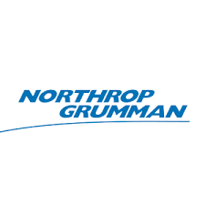
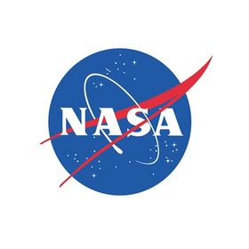

Women In Aerospace (WIA) is a registered student organization at the University of Illinois at Urbana-Champaign whose goal is to promote and maintain women's interests in the field of aerospace engineering. WIA also aims to provide a supportive resource for current and prospective female aerospace engineers and foster a sense of community for women in the aerospace engineering department here at the University of Illinois at Urbana-Champaign. Our campus chapter of WIA is also a chapter of the Women of Aeronautics and Astronautics (WoAA) committee within the American Institute of Aeronautics and Astronautics (AIAA).
- Educational Outreach
- Technical Projects
- Social Events
- Professional and Academic Development
- Networking
2022-2023 Executive Board
Chloe Hettick
President
Chloe is a senior in AE. She is President of Student Aircraft Builders (SAB) and technical writing lead for Design Build Fly (DBF). Chloe is also the Lead Engineering Learning Assistant for the Aerospace department, so if you have any ENG 100 questions you can ask her! Her favorite part of WIA is learning directly from upperclassmen about the school and the networking opportunities that allow her to get to know professors. She is a plane kid.
Noor Ansari
External Vice President
Noor is a senior in AE minoring in Astronomy. She was previously the EC/AEUAB Representative and loves the social and outreach events in WIA. Noor is also involved in Rube Goldberg Society and Muslim Student Association. She is also involved with research in the ObsCos group in the astronomy department. She has memorized Barbie Princess and the Pauper.Navya Meka
Internal Vice President
Navya is a sophomore in AE from Buffalo Grove, Illinois. She loves how supportive WIA is and enjoys getting to know its members through the events. She is also involved in Illinois Space Society and PhysicsVan and is planning to pursue an astronomy minor. In her free time, she likes reading, making art, and spending time outdoors!Anna Marie Buss
Outreach Director
Anna Marie is a junior in AE minoring in Materials Science & Engineering. Her favorite part about WIA is the welcoming and supportive community. She is also a member of Tau Beta Pi, Illinois Space Society, and Phi Eta Sigma. A fun fact about Anna Marie is that she loves the outdoors and has been to 48 states. Anna Marie is currently recruiting for our outreach committee for 2022 - 2023. Apply below!Nicole Orloff
Secretary
Nicole is a sophomore in AE. She grew up in Naperville, but she now calls Bozeman, Montana home. She loves how welcoming WIA has been, and her favorite part of the organization is being able to learn from the great members before her. WIA's meetings and happy hours are always fun for her. She enjoys anything outdoors and can't wait for ski season. She also likes to read and work out in her free time.Savannah Hubbs
Treasurer
Savannah is a senior in AE. She is from southern Illinois and loves hiking in the surrounding Shawnee National Forrest. Her favorite part of WIA is the amazing support within the group. In her free time, she enjoys sewing, and don't give her good book suggestions or she will read it in one day.Megan Dickerson
Social Co-Chair
Megan is a junior in AE. She was a cadet chief master sergeant in the civil air patrol and is teaching herself Japanese for fun because she aims to be a polyglot. Languages are her happy place, so she plans to minor in Spanish, and Russian is next on the list! Megan also enjoys drawing and has recently gotten into making digital art.Cathy Maali
Assistant Outreach Director
Cathy is a junior in AE. On campus she is involved with Women in Engineering, the Illinois Space Society, and Engineering Career Services. In her free time, you can catch her working at Mia Za’s, crocheting tiny animals, doing puzzles, or watching cheesy reality tv.
Mady Drilling-Coren
Fundraising Chair
Mady is a junior in AE.
TBD
EC/AEUAB Representative
This position will be filled by a freshman. We will be sending out applications soon in our weekly newsletter.2022-2023 Graduate Executive Board
Aadhy Parthasarathy
Aadhy is a 5th year PhD student in AE. She is doing experimental research on turbulent boundary layers. Apart from WIA, she is involved with other DE&I efforts on campus, including being a part of AE’s diversity committee and co-leading a GIANT-funded project to help new graduate students who are gender minorities in engineering, and also participates in various outreach and mentorship activities. She likes being productive, enjoys staying indoors and spending quality time with people she loves.Aanchal Gupta
Aanchal Gupta is a graduate student pursuing a PhD under Prof.Magdi Ragheb and Prof.Rizwan Uddin. Her research is in the field of nuclear space power and propulsion. Through her research, she intends to fulfill her dream of helping launch humans into deep space and interplanetary missions. She is President of Aerospace Graduate Student Advisory Committee (AeroGSAC). Apart from academics, Aanchal has an interest in reading thriller & high-fantasy novels, watching suspense-thriller movies, trekking, traveling & exploring new places. She enjoys helping and connecting with people from different backgrounds. By serving as a board member of WIA she hopes to support female graduate students and enhance their cultural, social, and academic experience at UIUC.Ani Pirosmanishvili
Ani is a first year master’s student. She is working on the control design of a VTOL with Prof Merret. She loves to read in her free time which almost never happens anymore. Everytime she sees a plane in the sky, she needs to make sure everyone also sees it.
Rupal Nigam
Rupal is currently a 3rd year Ph.D. student in AE. She received her BSE in computer science from the University of Michigan, Ann Arbor. Her research interests include human-machine teaming and bio-inspired learning for adaptive autonomy. In her free time she enjoys hiking with her dog, reading, and playing video games.
Tove Kopperstad
Tove is a grad student in AE.Our Network




